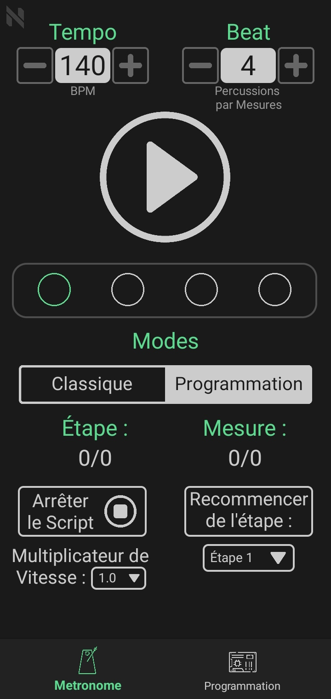
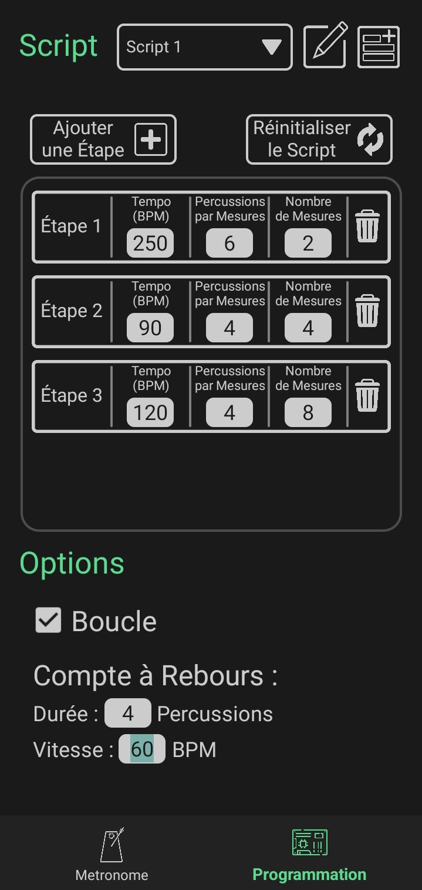

Vous voulez jouer une morceau de musique avec un instrument mais le tempo change tout le temps ? Grâce à cette application, vous pourrez programmer le tempo et le rythme de chaque mesure de toute une partition, à l'aide d'une interface simple et intuitive. Lorsque vous démarrerez le metronome, les changements de tempo se feront automatiquement en fonction de votre programme.

